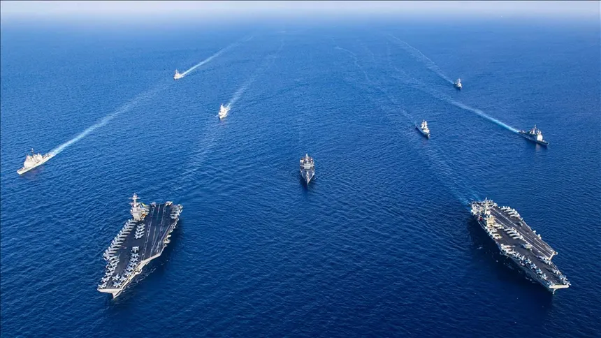

US Carrier Group Moves Toward Strait of Hormuz

March 12, 2026 — UBNews Military Desk
A United States Navy carrier strike group has moved closer to the Strait of Hormuz as tensions continue to increase across the region. Defense officials say the deployment is designed to strengthen maritime security and maintain freedom of navigation through one of the world's most important shipping corridors.
The Strait of Hormuz is a narrow waterway connecting the Persian Gulf to the Gulf of Oman. Nearly twenty percent of the world's oil shipments pass through the route, making it one of the most strategically significant maritime chokepoints on the planet.
The carrier strike group includes guided-missile destroyers, cruisers, and an aircraft carrier capable of launching both reconnaissance and combat missions. Military analysts say the presence of the group provides rapid response capability if commercial shipping lanes face threats.
Naval patrols in the region have intensified following reports of naval mine activity and attacks on merchant vessels. Several allied nations have also increased surveillance flights and maritime monitoring operations.
Officials emphasized that the deployment is intended to ensure stability in the region and protect international trade routes rather than escalate tensions.